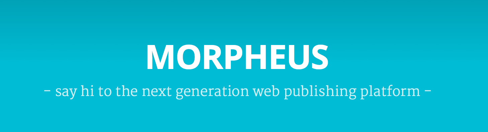

class: center, middle # About Morpheus @koba04 --- ## Morpheus  --- ## What is Morpheus? * Isomorphic web publishing platform * React.jsによるserver-side rendering * markdownで書ける * まだ開発が始まったばかり --- ## Architecture * React.js * Flux * yahoo/fluxible * express * browserify * gulp --- class: center ## Try it! http://en.blog.koba04.com/ (hosted heroku) --- class: center, middle ## Implementation --- ## renderToString bodyはrenderToStringでrenderしている ```js function makeCall(req, res, next, options) { var context = res.locals.context; var fluxibleApp = res.locals.fluxibleApp; context.getActionContext().executeAction(options.action, options.params, function(err) { if (err) { return next(err); } res.locals.state = 'window.Morpheus=' + serialize(fluxibleApp.dehydrate(context)) + ';'; var AppComponent = fluxibleApp.getAppComponent(); var markup = React.renderToString(AppComponent({ //jshint ignore:line context: context.getComponentContext(), enableScroll: false })); serverUtils.render(res, markup); }); } ``` https://github.com/vesparny/morpheus/blob/develop/server/routes/index.js --- ## renderToStaticMarkup htmlの部分はrenderToStaticMarkupでrenderしている ```js render: function(res, markup, state) { state = state || res.locals.state; var html = React.renderToStaticMarkup(HtmlComponent({ //jshint ignore:line state: state, markup: markup, context: res.locals.context.getComponentContext() })); res.set({ 'content-type': 'text/html; charset=utf-8' }); res.write('<!doctype>' + html); res.end(); }, ``` https://github.com/vesparny/morpheus/blob/develop/server/utils.js --- ## Theme npmでThemeがインストール出来るようにしたい [\#14](https://github.com/vesparny/morpheus/issues/14) ```sh content/themes/blablabla ├── App.js ├── Disqus.js ├── Error.js ├── Footer.js ├── GoogleAnalytics.js ├── Gravatar.js ├── Header.js ├── HeaderSingle.js ├── Html.js ├── Loader.js ├── Paginator.js ├── PostList.js ├── PostListElement.js ├── Single.js ├── Tag.js ├── TagPage.js ├── Tags.js └── assets ├── css ├── dist ├── fonts ├── img ├── js └── scss ``` --- ## Component 共通ComponentやMixinとしていかないとThemeの作成が厳しくなりそう ```js var PostList = React.createClass({ mixins: [StoreMixin], propTypes:{ context:React.PropTypes.object.isRequired }, getInitialState: function() { return this.getStateFromStores(); }, getStateFromStores: function () { return { posts: this.getStore(ContentListStore).getState().contentList, cssClass: 'home' }; }, getDefaultProps: function() { return { page: '1' }; }, componentDidMount: function() { if(!this.state.posts){ this.props.context.executeAction(ContentActions.list); } }, : ``` --- ## yahoo/fluxible * コード量が少なくて把握しやすいけど、fluxibleを理解する必要がある * contextを引き回す感じはちょっとツラい... ```js var Single = React.createClass({ mixins: [StoreMixin], statics: { storeListeners: { _onChange: [ContentStore] } }, propTypes: { context: React.PropTypes.object.isRequired, params: React.PropTypes.object.isRequired }, ``` --- ## context --- class: center, middle ### 今後に期待！ --- class: center, middle ### <x-sushiyuki type="akami">Thanks</x-sushiyuki> http://koba04.github.io/slides/about-morpheus/